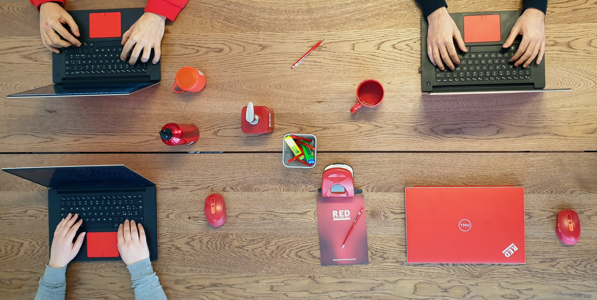

Hi i’m Danylo ,i’m 22y/o and i live near Milan. I like writing, coding
and the social media marketing.
This passion became my work.

I write the blog and new articles for my company and i like doing
that, because for writing something you need to know about that
argument and then describe it with your language. I like to use easy
language that can be understand by many people.
Since i was young i always loved IT world, games, websites and tech
products.